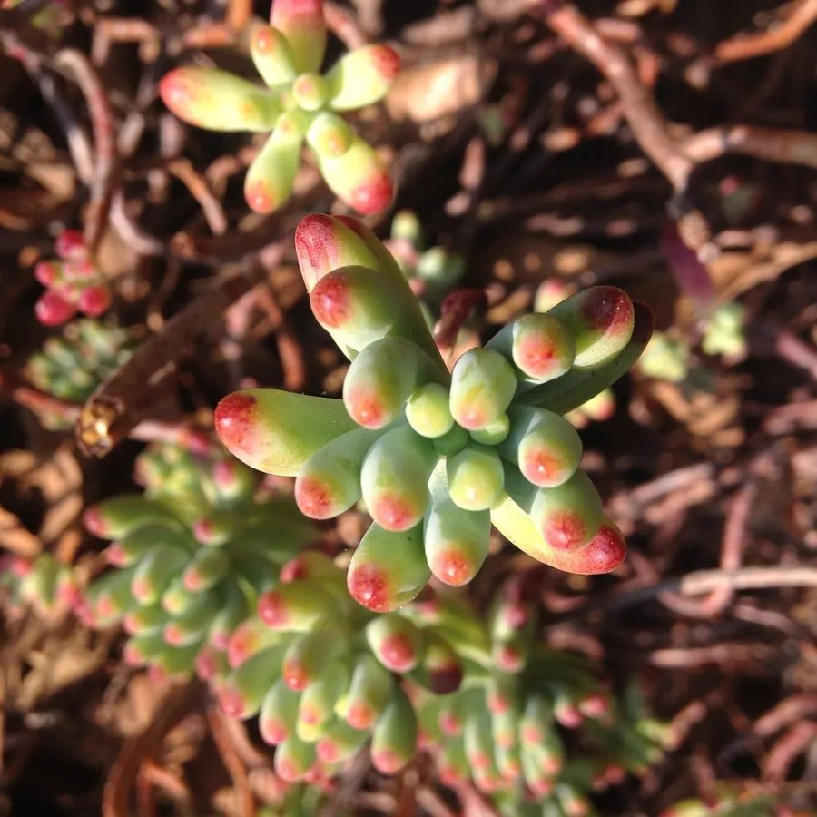

多肉植物 · 植物界
乙女心 Sedum pachyphyllum

景天科景天属小型多肉，叶片圆棒状、先端泛红，如少女指尖，易群生，原产墨西哥，是热门入门品种，叶插繁殖容易。
- 分类
- 门被子植物门纲木兰纲目虎耳草目科景天科属景天属
- 栖息环境
- 墨西哥干旱山地的岩石坡地，喜光、干燥、通风
- 地理分布
- 原产墨西哥，世界各地盆栽栽培，中国各地多肉市场常见
- 保护级别
- 暂无评估
物种志
乙女心为景天科景天属小型多肉植物，株高 10–20 厘米，茎直立或匍匐，叶片圆棒状，长 2–4 厘米，肉质肥厚，淡绿色至蓝绿色，表面覆薄白粉，先端在光照充足时泛红。花星形，黄色，花期春季；果实为蓇葖果。
乙女心原产墨西哥的干旱山地，喜阳光充足、凉爽干燥和通风良好的环境，耐旱怕积水，夏季高温时生长缓慢。它叶片圆润、先端泛红，形似少女的指尖，因此得名；光照越足、温差越大，叶尖的红色越明显，光照不足则叶片变绿、徒长。乙女心容易掉叶，掉落的叶片可叶插繁殖，栽培以颗粒土为主，浇水见干见湿，夏季高温时控水遮阴，秋季可恢复正常浇水。
形态与习性
- 株高10–20 厘米，茎直立或匍匐
- 花期春季，花星形，黄色
- 果期花后结蓇葖果
- 光照喜充足阳光，夏季高温需遮阴
- 水分耐旱，见干见湿，忌积水
- 土壤颗粒为主、排水良好的矿质土
- 繁殖叶插、枝插
- 主要用途多肉拼盘、盆栽观赏
趣味知识
- 乙女心的叶片圆棒状、先端泛红，形似少女指尖，因此得名。
- 光照越足、温差越大，叶尖的红色越明显。
- 它容易掉叶，掉落的叶片可直接用于叶插繁殖。
- 乙女心夏季高温时生长缓慢，此时应控水并保持通风。